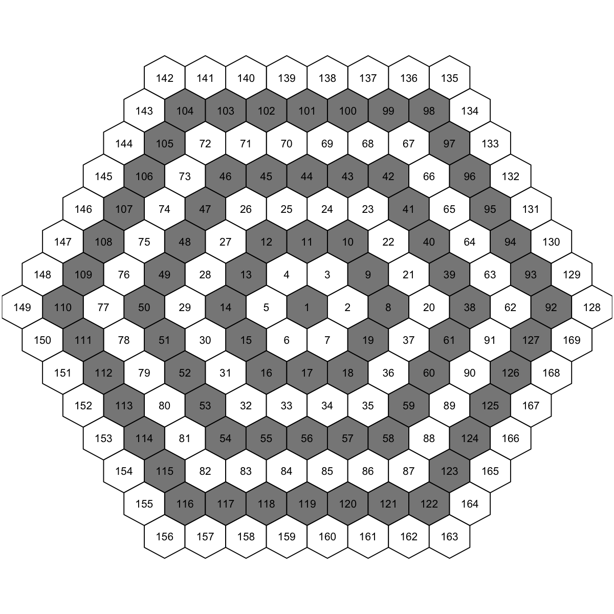
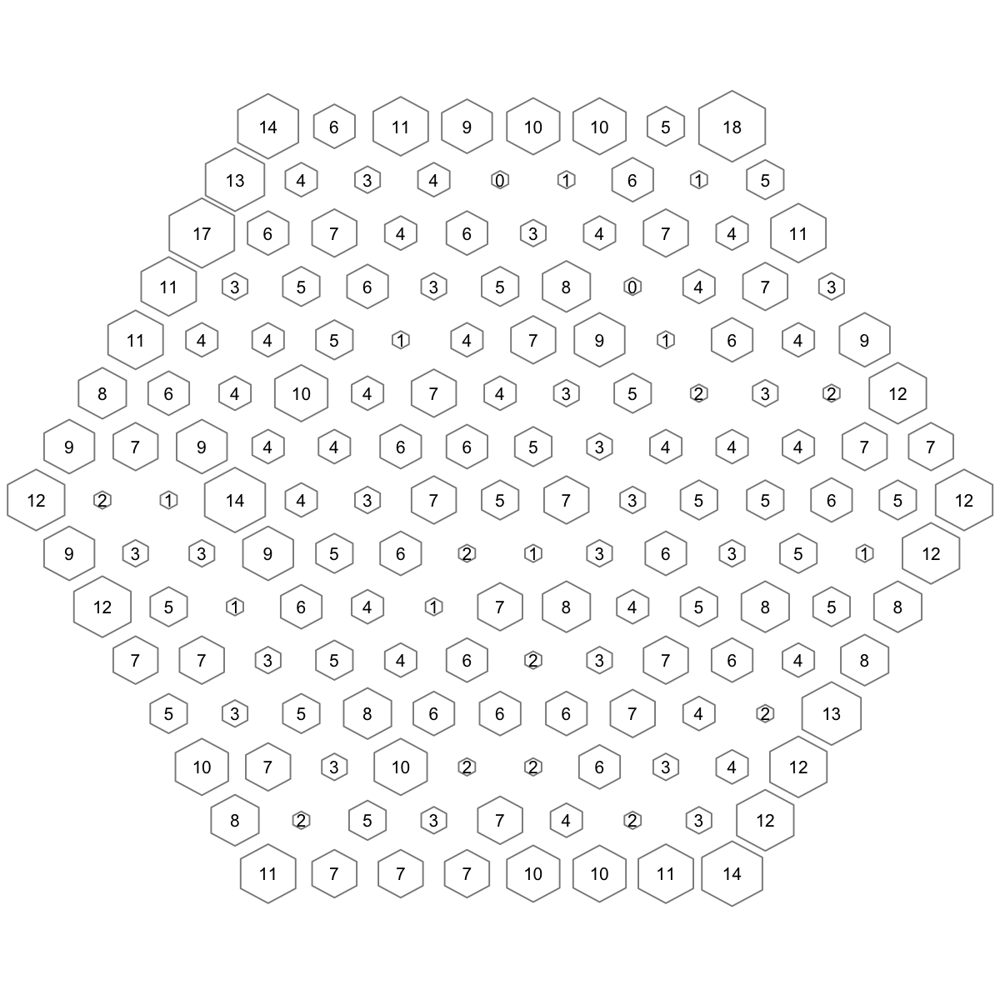
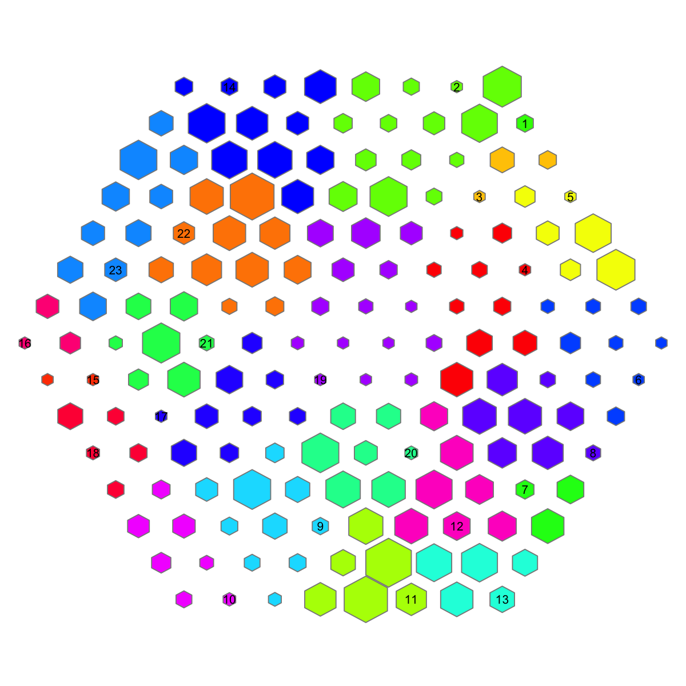
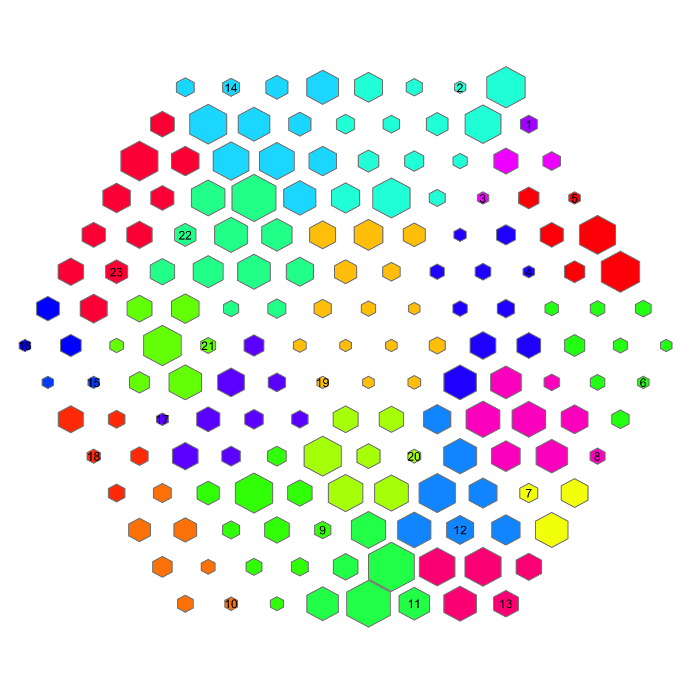

<!DOCTYPE html>
<html lang="en">
  <head>
    <meta charset="utf-8">
<title>visHexMapping @ supraHex 1.1.17</title>
<meta name="viewport" content="width=device-width, initial-scale=1.0">
<meta name="author" content="">

<link href="css/bootstrap.css" rel="stylesheet">
<link href="css/bootstrap-responsive.css" rel="stylesheet">
<link href="css/highlight.css" rel="stylesheet">
<link href="css/staticdocs.css" rel="stylesheet">


<style type="text/css">

.navbar .brand {
  display: block;
  float: left;
  padding: 8px 20px 12px;
  margin-left: -20px;
  font-size: 20px;
  font-weight: 200;
  line-height: 1;
  color: #999999;
}

.navbar .brand:hover {
  color: #F87217;
  text-decoration: none;
  background-color: transparent;
}

.navbar .nav > li > a:hover {
  color: #F87217;
  text-decoration: underline;
  background-color: transparent;
}

</style>


<!--[if lt IE 9]>
  <script src="http://html5shim.googlecode.com/svn/trunk/html5.js"></script>
<![endif]-->

<!-- google analytics -->
<script type="text/javascript">

  var _gaq = _gaq || [];
  _gaq.push(['_setAccount', 'UA-17338744-2']);
  _gaq.push(['_trackPageview']);

  (function() {
    var ga = document.createElement('script'); ga.type = 'text/javascript'; ga.async = true;
    ga.src = ('https:' == document.location.protocol ? 'https://ssl' : 'http://www') + '.google-analytics.com/ga.js';
    var s = document.getElementsByTagName('script')[0]; s.parentNode.insertBefore(ga, s);
  })();

</script>

<!-- Enlarge image -->
<script type="text/javascript">
    function newWin(url, name, width, height) { 
       
        var left = (screen.width/2)-(width/2);
        var top = (screen.height/2)-(height/2); 
        
        window.open(url,name,'scrollbars=yes,resizable=yes,fullscreen=yes, width=' + width + ', height='+height+', top='+top+', left='+left);
    }
</script>
  </head>

  <body>
    <div class="navbar">
  <div class="navbar-inner">
    <div class="container">
      <a class="brand" href="index.html">supraHex 1.1.17</a>
      <div class="nav">
        <ul class="nav">
          <li><a href="index.html"><i class="icon-home icon-white"></i> Home</a></li>
        </ul>
        <ul class="nav">
          <li><a href="docs.html"><i class="icon-book icon-white"></i> Documentations</a></li>
        </ul>
        <ul class="nav">
          <li><a href="install.html"><i class="icon-wrench icon-white"></i> Installation</a></li>
        </ul>
        <ul class="nav">
          <li><a href="demos.html"><i class="icon-play icon-white"></i> Demos</a></li>
        </ul>
        <ul class="nav">
          <li><a href="cite.html"><i class="icon-pencil icon-white"></i> Citation</a></li>
        </ul>
      </div>
    </div>
  </div>
</div>

    <div class="container">
      <header>
        
      </header>
      
      <h2>Function to visualise various mapping items within a
supra-hexagonal grid</h2>

<div class="row">
  <div class="span8">
  
    <h3>Description</h3>
    <p><code>visHexMapping</code> is supposed to visualise various
mapping items within a supra-hexagonal grid</p>
  
    <h3>Usage</h3>
    <pre>visHexMapping(sObj, mappingType = c("indexes", "hits", "dist", "antidist", "bases", 
  "customized"), labels = NULL, height = 7, margin = rep(0.1, 4), area.size = 1, 
      gp = grid::gpar(cex = 0.7, font = 1, col.label = "black"), border.color = "black", 
      fill.color = "transparent", clip = c("on", "inherit", "off"), newpage = T)</pre>
    
    <h3>Arguments</h3>
    <dl>
      <dt>sObj</dt>
      <dd>an object of class "sMap" or "sInit" or
"sTopol"</dd>
      <dt>mappingType</dt>
      <dd>the mapping type, can be "indexes",
"hits", "dist", "antidist", "bases", and "customized"</dd>
      <dt>labels</dt>
      <dd>NULL or a vector with the length of nHex</dd>
      <dt>height</dt>
      <dd>a numeric value specifying the height of
device</dd>
      <dt>margin</dt>
      <dd>margins as units of length 4 or 1</dd>
      <dt>area.size</dt>
      <dd>an inteter or a vector specifying the
area size of each hexagon</dd>
      <dt>gp</dt>
      <dd>an object of class "gpar". It is the output
from a call to the function "gpar" (i.e., a list of
graphical parameter settings)</dd>
      <dt>border.color</dt>
      <dd>the border color for each hexagon</dd>
      <dt>fill.color</dt>
      <dd>the filled color for each hexagon</dd>
      <dt>clip</dt>
      <dd>either "on" for clipping to the extent of
this viewport, "inherit" for inheriting the clipping
region from the parent viewport, or "off" to turn
clipping off altogether</dd>
      <dt>newpage</dt>
      <dd>logical to indicate whether to open a new
page. By default, it sets to true for opening a new page</dd>
    </dl>
    <!-- 
    -->
    
    <div class="Value">
      <h3>Value</h3>
      
      <p>invisible</p>
    </div>
    <div class="Note">
      <h3>Note</h3>
      
      <p>The mappingType includes: <ul>
<li>"indexes": the
index of hexagons in a supra-hexagonal grid
</li>
<li>"hits": the number of input data vectors hitting
the hexagons </li>
<li>"dist": distance (in high-dimensional
input space) to neighbors (defined in 2D output space)
</li>
<li>"antidist": the oppose version of "dist"
</li>
<li>"bases": clusters partitioned from the sMap
</li>
<li>"customized": displaying input "labels" </li>
</ul></p>
      <p></p>
    </div>
    
    <h3 id="examples">Examples</h3>
    <pre class="examples"><div class='input'># 1) generate data with an iid matrix of 1000 x 9
data <- cbind(matrix(rnorm(1000*3,mean=0,sd=1), nrow=1000, ncol=3),
matrix(rnorm(1000*3,mean=0.5,sd=1), nrow=1000, ncol=3),
matrix(rnorm(1000*3,mean=-0.5,sd=1), nrow=1000, ncol=3))
colnames(data) <- c("S1","S1","S1","S2","S2","S2","S3","S3","S3")

# 2) sMap resulted from using by default setup
sMap <- sPipeline(data=data)
</div>
<strong class='message'>Start at 2014-03-26 11:07:14</strong>
<strong class='message'></strong>
<strong class='message'>First, define topology of a map grid...</strong>
<strong class='message'>Second, initialise the codebook matrix given a topology and input data...</strong>
<strong class='message'>Third, get training at the rough stage...</strong>
<strong class='message'>Fourth, get training at the finetune stage...</strong>
<strong class='message'>Next, identify the best-matching hexagon/rectangle for the input data...</strong>
<strong class='message'>Finally, append the response data (hits and mqe) into the sMap object...</strong>
<strong class='message'></strong>
<strong class='message'>Below are the summaries of the training results:</strong>
<strong class='message'>   dimension of input data: 1000x9
   xy-dimension of map grid: xdim=15, ydim=15
   grid lattice: hexa
   grid shape: suprahex
   dimension of grid coord: 169x2
   initialisation method: linear
   dimension of codebook matrix: 169x9
   mean quantization error: 4.27891105682274
</strong>
<strong class='message'>Below are the details of trainology:</strong>
<strong class='message'>   training algorithm: batch
   alpha type: invert
   training neighborhood kernel: gaussian
   trainlength (x input data length): 2 at rough stage; 7 at finetune stage
   radius (at rough stage): from 4 to 1
   radius (at finetune stage): from 1 to 1
</strong>
<strong class='message'>End at 2014-03-26 11:07:14</strong>
<strong class='message'>Runtime in total is: 0 secs
</strong>
<div class='input'>
# 3) visualise supported mapping items within a supra-hexagonal grid
# 3a) for indexes of hexagons
visHexMapping(sMap,mappingType="indexes")
</div>
<a href="javascript:newWin('visHexMapping-18.png', 'visHexMapping-18.png', '1200', '1200')" title="Click to enlarge"></a>
<div class='input'># 3b) for the number of input data vectors hitting the hexagons
visHexMapping(sMap,mappingType="hits")
</div>
<a href="javascript:newWin('visHexMapping-20.png', 'visHexMapping-20.png', '1200', '1200')" title="Click to enlarge"></a>
<div class='input'># 3c) for distance (in high-dimensional input space) to neighbors (defined in 2D output space)
visHexMapping(sMap,mappingType="dist")
</div>
<a href="javascript:newWin('visHexMapping-22.png', 'visHexMapping-22.png', '1200', '1200')" title="Click to enlarge"></a>
<div class='input'># 3d) for anti-distance (in high-dimensional input space) to neighbors (defined in 2D output space)
visHexMapping(sMap,mappingType="antidist")
</div>
<a href="javascript:newWin('visHexMapping-24.png', 'visHexMapping-24.png', '1200', '1200')" title="Click to enlarge"></a>
<div class='input'># 3e) for clusters/bases partitioned from the sMap
visHexMapping(sMap,mappingType="bases")
</div>
<a href="javascript:newWin('visHexMapping-26.png', 'visHexMapping-26.png', '1200', '1200')" title="Click to enlarge"></a></pre>
  </div>
  
  <div class="span4">
    
    <!-- 
    <ul>
      <li>visHexMapping</li>
    </ul>
    <ul>
      
    </ul> 
    -->
      
    <h2>See also</h2>
    
<code><a href='sDmat.html'>sDmat</a></code>, <code><a href='sDmatCluster.html'>sDmatCluster</a></code>,
<code><a href='visHexGrid.html'>visHexGrid</a></code>

    
    <h2>Citation</h2>
    <p>Fang H, Gough J. (2014) supraHex: an R/Bioconductor package for tabular omics data analysis using a supra-hexagonal map. Biochemical and Biophysical Research Communications, 443(1), 285-289. <a href="http://dx.doi.org/10.1016/j.bbrc.2013.11.103">http://dx.doi.org/10.1016/j.bbrc.2013.11.103</a>, PMID: <a href="http://www.ncbi.nlm.nih.gov/pubmed/?term=24309102">24309102</a></p>

    
    <!--
    
    <h2>URL</h2>
    <ul>
      <li><a href="http://supfam.org/supraHex">http://supfam.org/supraHex</a></li>
    </ul>
    
    
    -->
    
  </div>
  
</div>
      
      <footer>
      <p class="pull-right"><a href="#">Back to top</a></p>

<p><a href="mailto:hfang@cs.bris.ac.uk" title="Hai Fang">Hai Fang</a></p>
<p><a href="http://bioinformatics.bris.ac.uk">Computational Genomics Group, Department of Computer Science, University of Bristol, UK</a></p>


      </footer>
    </div>
  </body>
</html>